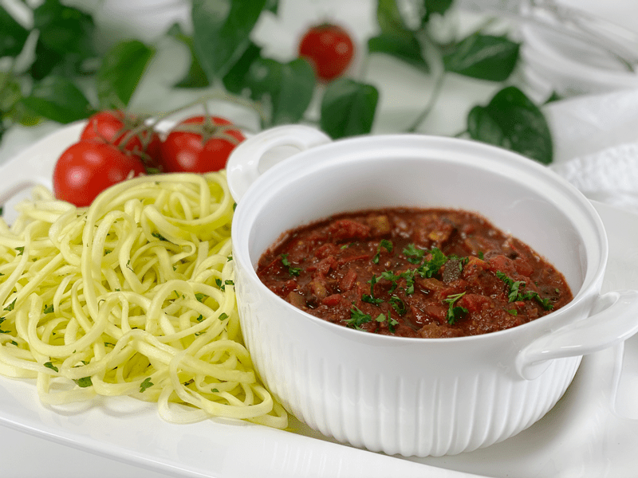
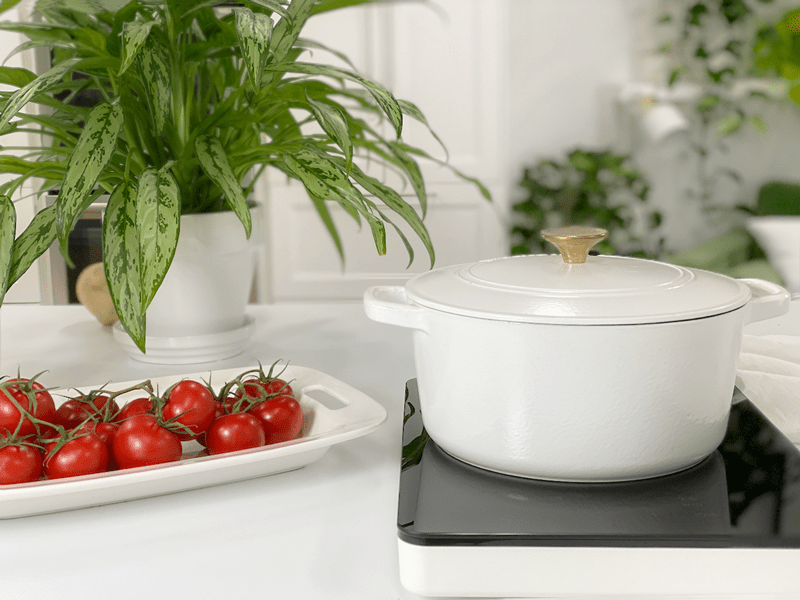
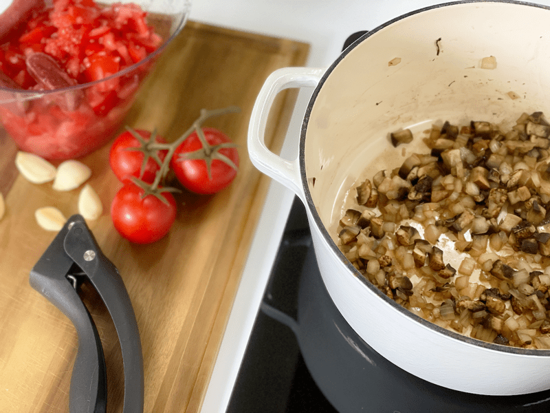
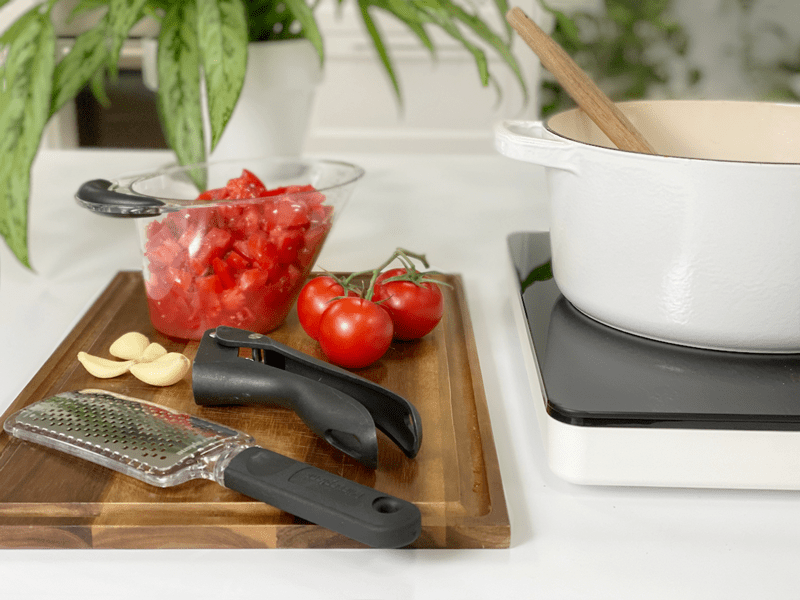
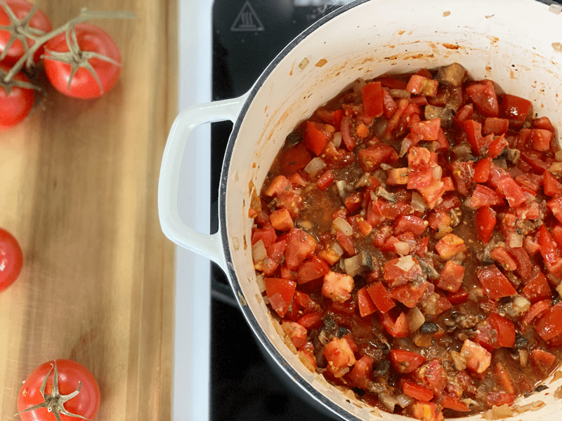
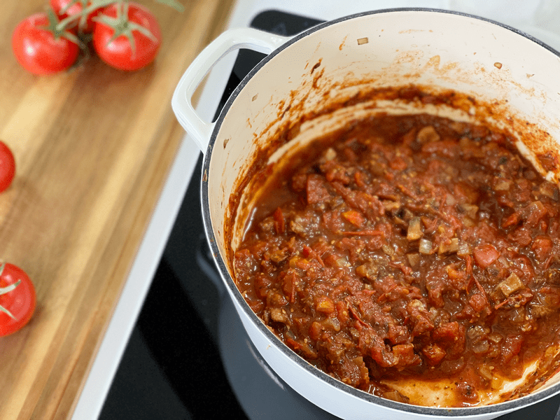

Spaghetti Sauce | Made from Scratch | Oil-Free
Lately, I have been enjoying cooking without the use of oil. Honesty, it’s been much easier than I had imagined. For over ten years, I have dedicated countless hours to learning how to substitute particular ingredients in and out of recipes. A lot of them were created out of our personal dietary needs, and others came as requests from readers. Vegan, nut-free, grain-free, nightshade-free, coconut-free, AIP, paleo, raw, keto, FODmap, cooked, you name it…I have studied it and have made recipes that fit within each dietary label. Now I am adding oil-free cooking to my list of skills.

As the spaghetti slowly simmers, the smell alone transports me to my parents’ house, which right now, more than ever, brings me great comfort. My mom had an airplane ticket in hand to come to visit us right when COVID-19 started to “get serious” in the States. Unfortunately, she had to cancel her trip. I miss my family ALL the time, but when our distancing is forced, that seems to make it all that more hard. When my mom makes spaghetti, it permeates the house as she slow simmers it all day. So, needless to say, when I make my own, I feel like Mom or Dad will come around the corner at any moment. But since that isn’t reality, let’s get busy talking about the recipe that I am presenting to you today.

Ingredient Run-Down
Tomato Options & Tips
- Your sauce will ONLY be as good as your tomatoes. Bland, tasteless tomatoes, will create a bland, tasteless dish. I used vine-ripened tomatoes that were bursting with flavor.
- Tomato paste adds a layer of richness to the sauce that you don’t get from using straight fresh tomatoes. See my tomato paste tip down toward the end of this post.
- If the tomatoes you are using (fresh or canned) taste a bit astringent and bitter, try adding 1-3 teaspoons of coconut sugar to the sauce to help balance out the flavors.
- Canned options : You can use 1 can Diced Tomatoes – No Salt Added (15oz) and 1 can Fire Roasted Chopped Tomatoes (15oz) if you don’t have fresh on hand. Whenever you used canned goods, always watch the sodium count, especially if you are adding additional sea salt to the recipe.
Fresh Garlic
- Garlic is a crucial component of any spaghetti sauce. Its aromatic, slightly sulfuric flavor balances out the acidic tomatoes.
- Typically, tomato sauce relies on the fat solubility of the flavor compounds in garlic to infuse flavor throughout the sauce and give it mouthfeel and body. Since we are cooking without fat in the recipe, grating the garlic on a microplane grater or crushing in a press will produce finer particles than chopping by hand, making it stronger. You can also crush chopped garlic with a bit of salt in a mortar and pestle to produce the most robust flavor of all.
- I used frozen whole garlic cloves since we are preserving certain foods to make them last longer during the COVID-19 pandemic. Since they had been frozen, I used a garlic press instead of a grater.
Soy Sauce (Coconut Aminos)
- A tiny, tiny splash of soy sauce replaces some of the umami missing without the olive oil.
- Coconut aminos is similar in color and consistency to light soy sauce, making it a natural substitute in recipes. It’s not as rich as traditional soy sauce and has a milder, sweeter flavor. It’s lower in salt than soy sauce and free of common allergens, including gluten and soy.
- Feel free to use any soy sauce version that you have on hand.
Nutritional Yeast
- Typically, nutritional yeast is added to vegan recipes to give it a cheesy hint of flavor. That is not the case in this recipe. I added it because it adds an umami layer of flavor, giving it that deep richness that spaghetti sauces typically have.
Balsamic Vinegar
- Balsamic vinegar helps to sweeten and add depth to the flavor.
- It’s always best to stir in the balsamic vinegar and let the sauce rest for 10-15 minutes (for the flavor to absorb) before serving.
Dried or Fresh Herbs
- The golden rule when substituting one for the other is: 1 Tbsp fresh herbs = 1 tsp dried herbs. Dried herbs pack a stronger, more condensed flavor than fresh.
- If using dried herbs, add them at the beginning of the cooking process to “develop” and more fully release their flavors.
- If using fresh, add toward the end, since they are more delicate. I like to add mine about five or ten minutes before the sauce is finished.
- I have a post (here) that goes more in-depth on this topic.
Techniques I Used
Water Sautéing
- Interestingly enough, when sautéing vegetables, water or broth do just as well as oil. You can be creative by using rice vinegar, balsamic vinegar, tomato juice, lemon or lime juice, and coconut aminos. Each one adds a hint of flavor to the dish.
- Heat your pan or pot and add 1-2 Tbsp of liquid (mentioned above). Once the liquid turns bubbly, proceed with your recipe as you typically would if you started with oil. You may need to add more liquid to prevent the food from sticking to the pan. Do this as often as necessary to cook and brown the food.
- The key is to keep the veggies moving so they don’t burn.
Taste Testing
- Taste-testing while creating a recipe is crucial.
- If “taste-testing” were an actual ingredient, it would be pegged as the most important one of all time. The reason behind this is because you will be using fresh foods that are not artificially altered by food manufacturers.
- The flavors of your fruits and veggies can vary from carrot to carrot and from apple to apple. It all depends on the quality of your produce, when it was harvested, and if it is at peak ripeness.
- Please read my post regarding this topic by clicking (here).
I hope you try and enjoy this recipe. As the rich aromas blanket your kitchen, know that my thoughts and prayers are with you. amie sue
Yields 3 cups
- 3/4 cup diced onion
- 2 cups sliced/diced mushrooms
- 4 cloves garlic, microplaned
- 3 cups (1.4 lbs)diced fresh vine-ripened tomatoes
- 3 Tbsp tomato paste
- 1 Tbsp nutritional yeast
- 1 tsp dried basil or 1 Tbsp fresh
- 1 tsp dried oregano or 1 Tbsp fresh
- 1 Tbsp coconut aminos
- 1/2 tsp salt (or to taste)
- 1/4 tsp black pepper
- 1 Tbsp balsamic vinegar
- In a medium-large stock pot, water sauté the diced onions and mushrooms on medium heat until both are soft and the onions are translucent, and the mushrooms darken in color.
- Don’t rush the process; this step develops excellent flavor for the sauce.
- Mushrooms are high in water, so as they cook down, they will release liquid, which is great for the sauté process as well.
- Add the microplaned garlic and cook for another 60 seconds, just until the garlic becomes aromatic.
- Be careful that you don’t burn the garlic, or it will add a bitter taste to the dish.
- Add chopped tomatoes (including their juices and seeds), tomato paste, nutritional yeast, dried herbs, coconut aminos, and salt. Turn heat up to medium-high. Simmer uncovered until tomatoes have mostly broken down–this can happen in as little as 25 minutes, but I recommend a low and slow simmer for a few hours. Stir often to prevent burning.
- If using fresh herbs, add them 10 minutes before taking the sauce off the heat.
- Add the balsamic vinegar and let the sauce rest for 10-15 minutes (for the flavor to absorb) before serving.
- If the sauce is too thin for your liking, cooking it longer with the lid off will help thicken it.
- Enjoy right away over a bed of zucchini noodles , spaghetti squash noodles, or for more veggie noodles, click (here).
-

-
Water saute the onions and mushrooms.
-

-
Add the garlic and cook for an additional 60 seconds.
-

-
Add all the ingredients except for the balsamic vinegar, bring to a gentle boil, then take it down to a simmer.
-

-
Sorry for the bad picture, but this is what it looks like all cooked down.
-

-
Food Tip: If you have leftover tomato paste, freeze it in 1 Tbsp measurements. Once frozen, pop them out and put in a freezer-safe container.
© AmieSue.com